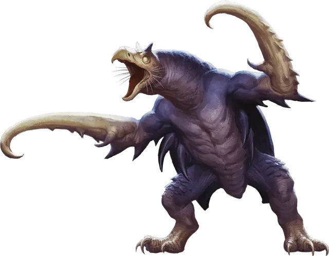

Крюкастый ужас
Hook Horror
Большой Монстр, нейтральный

Класс Доспеха 15 (природный доспех)
Хиты 75 (10к10 + 20)
Скорость 30 футов, лазая 30 футов
| мод | спас | ||
|---|---|---|---|
| СИЛ | 18 | +4 | +4 |
| ЛОВ | 10 | +0 | +0 |
| ТЕЛ | 15 | +2 | +2 |
| мод | спас | ||
|---|---|---|---|
| ИНТ | 6 | −2 | −2 |
| МДР | 12 | +1 | +1 |
| ХАР | 7 | −2 | −2 |
Навыки Восприятие +3
Чувства слепое зрение 60 футов, тёмное зрение 120 футов, пассивное Восприятие 13
Языки Язык Крюкастых ужасов
Опасность 3 (700 опыта)
Бонус мастерства +2
Среда обитания Подземье
Особенности
Эхолокация. Крюкастый ужас не может использовать слепое зрение, будучи оглохшим.
Острый слух. Крюкастый ужас совершает с преимуществом проверки Мудрости (Восприятие), полагающиеся на слух.
Действия
Мультиатака. Крюкастый ужас совершает две атаки крюками.
Крюк. Рукопашная атака оружием: +6 к попаданию, досягаемость 10 футов, одна цель. Попадание: Колющий урон 11 (2к6 + 4).
Описание
Являясь яростным хищником Подземья, крюкастый ужас защищает свои охотничьи угодья. В подземных пещерах, где обитают эти существа, постоянное скрипучее эхо от крюков, которыми эти существа царапают стены.
У чудовищного крюкастого ужаса голова как у грифа, туловище огромного жука с панцирем из костяных наростов. Свое название он получил из-за длинных, крепко сложенных рук и ног, которые заканчиваются искривленными крючковатыми когтями.
Эхо в темноте. Крюкастые ужасы общаются путем ударов крючьев о панцирь или окружающую каменную поверхность. То, что звучит для других как случайные постукивания, на самом деле — сложный язык, который гулко разносится на многие мили по Подземью и понятен только крюкастым ужасам.
Стайные хищники. Всеядные крюкастые ужасы едят лишайники, грибы, растения и всех существ, которых могут поймать. Конечности крюкастого ужаса дают ему отличную устойчивость на поверхности скал. Они используют свои навыки лазания, чтобы устраивать засады на потолке. Крюкастые ужасы охотятся стаями, работая вместе против крупнейших и самых опасных противников. Если бой идет не в его пользу, крюкастый ужас быстро поднимается на стену пещеры, чтобы сбежать.
Обособленные кланы. Крюкастые ужасы живут в обширных группах семей или кланов. Каждый клан управляется старшей женской особью, чей партнер, как правило, отвечает за охотников клана. Крюкастые ужасы откладывают яйца, которые сгруппированы в центральной, хорошо защищенной пещере клана.